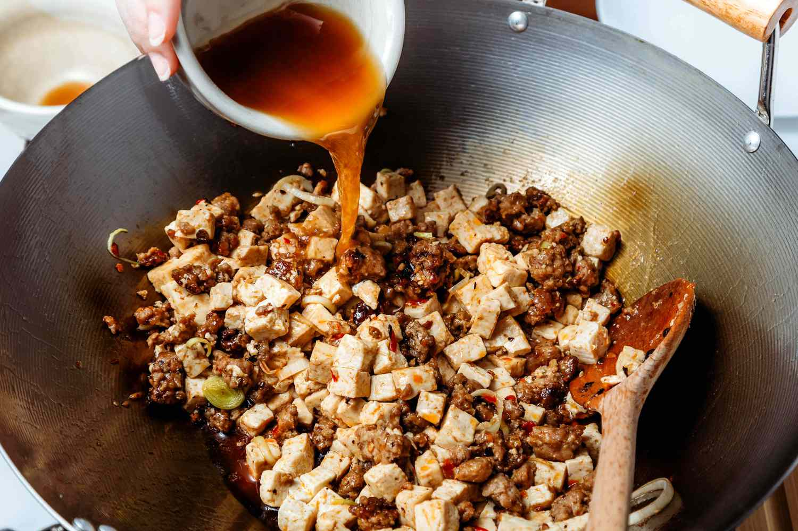
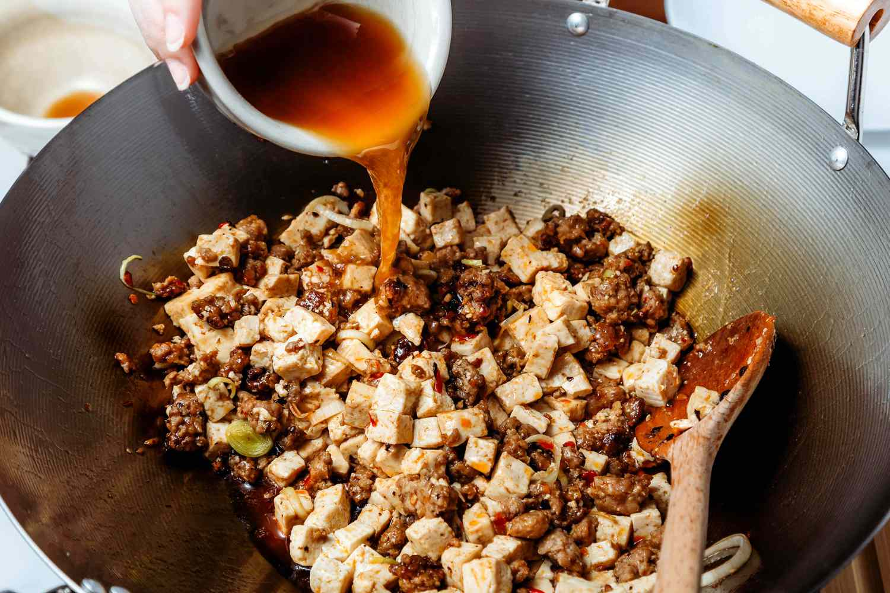
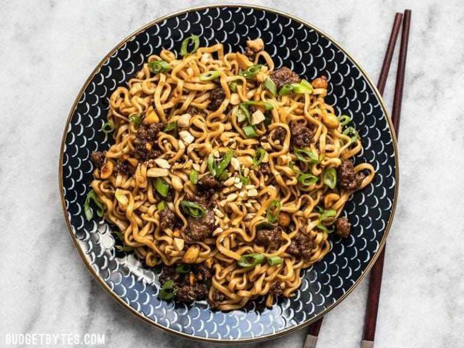
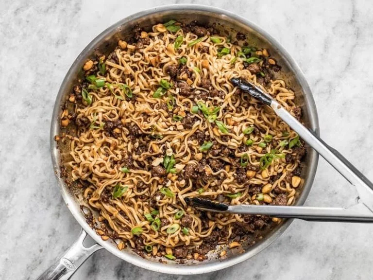
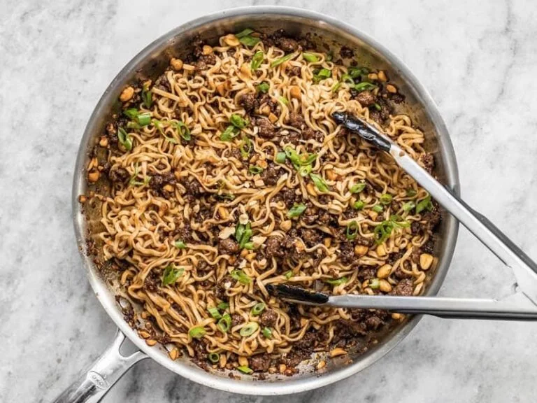

Mapo Tofu
Origin: ChineseSource: Own recipe
Category: Main Dish

Need something smooth and spicy? Mapo Tofu is a simple tofu dish from Sichuan China. It's great over rice and easy to prep/save for college students! This recipe is for people who want to try authentic Chinese food but do not have Sichuan spices to use.
Recipe Ingredients
- 1 pack silken tofu
- 2 green onions, thinly sliced
- 1/2 lb ground pork
- 1 pack mapo tofu sauce (store bought)
- 3 cloves minced garlic
- soy sauce to taste
- 2 tbsp cooking oil
Recipe Steps
- Brown pork in wok with oil for 4-5 minutes
- Add sauce and garlic, stir fry for 2 minutes
- Add tofu and mix lightly as to not break up the tofu too much, until heated through
- Add soy sauce, green onion and dish up
Additional Food images
 

Double Chocolate Cookies
Origin: MichiganSource: Family Recipe
Category: Dessert

My daughter learned to make these cookies at a baking camp at Zingermanns and has tweaked the recipe to fit the taste buds of her siblings. They are extremely sugary so the salt helps to balance it. Note, these cookies are best eaten very quickly.
Recipe Ingredients
- Unsalted butter
- Granulated Sugar
- Packed light or dark brown sugar
- Large egg
- Pure vanilla extract
- Semi-sweet chocolate chunks (melted)
- All-purpose flour
- Natural unsweetened cocoa powder
- Baking soda
- Salt
- Semi-sweet chocolate chunks
Recipe Steps
- In a mixing bowl cream together the butter, granulated sugar, and brown sugar
- Add the egg and vanilla extract and beat well
- Add the melted chocolate
- In a separate bowl combine the flour, baking soda, cocoa powder and salt
- Combine the wet and dry ingredients
- Add the unmelted chocolate chunks.
- Form 15 cookies and place on a baking sheet.
- Cook for 12 to 13 minutes at 350 degrees.
Additional Food images


Pesto Pasta
Origin: ItalianSource: https://www.simplyrecipes.com/recipes/fresh_basil_pesto/
Category: Main Dish

Pesto pasta has always been a comfort dish for me; it is quick, easy, and great food for a dinner party or a comfy night in! It requires six main ingredients, plus additional spices as you see fit. If you are not in the mood for pasta, you can always eat the pesto sauce on bread, crackers, or eggs! This recipe makes enough for around 4 people, so adjust accordingly.
Recipe Ingredients
- 2 cups fresh basil leaves, packed (can add some spinach if you don't have enough basil leaves)
- ¾ cup freshly grated Parmesan or Romano cheese
- ½ cup extra virgin olive oil
- ⅓ cup pine nuts (can sub with same amount of chopped walnuts)
- 3 cloves garlic, minced
- Salt & pepper to taste
- 8 oz of your choice of pasta (my preferred is penne, but any type will work)
Recipe Steps
- Heat up water in a pot for the pasta and put in a teaspoon of salt.
- Pulse the basil and pine nuts in a food processor. Add a bit of olive oil as need be if the ingredients are too dry.
- Add the garlic and cheese to the food processor.
- Once water starts boiling in the pot, add pasta. Stir every couple of minutes.
- While the food processor is running, slowly pour in olive oil.
- Once pasta is al-dente, turn off the heat and drain the pasta water. Save some of it if you want your pesto to be slightly thinner.
- Add the pasta back into the pot, mix in the pesto, and voila!
Additional Food images


Sushi Bake
Origin: AsianSource: Own recipe
Category: Main Dish

Do you want easy, quick way to enjoy sushi without having to do all of the work? Try to make our sushi bake, which takes 10 minutes to assemble and 20 minutes to bake in the oven. Our recipe feeds 8 people.
Recipe Ingredients
- 1 avocado
- 2 cups of rice
- 1 tablespoon of rice vinegar
- 3 tablespoons of mayonnaise
- 1 8 oz package of imitation crab
- 1 cucumber
- 3 tablespoons of sriracha
Recipe Steps
- Preheat oven to 350 degrees
- Make rice. Mix rice vinegar into rice after it is cooked
- Lay out all of the rice at the bottom of a large baking dish
- Lay out the imitation crab and cucumber on top of the rice
- Mix the imitation crab and 2 TBSP mayo into a crab salad
- Slice the avocado and lay those on the top of the dish
- Pour the rest of the mayo and sriracha on top
- Bake for 20 minutes
- Enjoy!


Tomato basil pasta
Origin: ItalianSource: Bon Apetit
Category: Main Dish

This recipe is a fantastic way to step up your pasta game without taking too much more of your time. It tastes way better than basic pasta with jarred sauce! I originally found this when my sister made it, and got the recipe off of Bon Appetit’s website. PS avoid using the shaker parmesan – I used that the first time I made this and it drew down the quality of the dish.
Recipe Ingredients
- pasta
- tomatoes (any larger than cherry)
- basil
- red wine vinegar
- extra virgin olive oil
- crushed red pepper
- finely grated block of parmesan
Recipe Steps
- cut tomatoes along equator
- squeeze juice and seeds out of tomatoes and discard
- cut juiced tomatoes into small-ish pieces
- smush down with large spoon to release some leftover juices
- add in vinegar, olive oil, crushed red pepper and half of parmesan
- let marinate for half an hour
- add basil
- cook pasta
- toss marinade with cooked pasta and serve topped with remaining parmesan


Pork and Peanut Dragon Noodles
Origin: unknownSource: Budget Bytes
Category: Main Dish, Comfort Food, Quick Meal

This meal is a cheap and easy alternative to the classic cheap college meal: ramen noodles. It cooks up in about 10 minutes, and offers a ton of flavor and a more filling alternative to the typical packaged food. There is also plenty of room for culinary freedom and expression by adding extra sauces or spices, and substituting the pork for something like chicken for a healthier protein option.
Recipe Ingredients
- 1/4 cup chili garlic sauce
- 1/4 cup soy sauce
- 1/4 cup brown sugar
- 1/2 lb. ground pork
- 2 3oz. packages ramen noodles (seasoning packets discarded)
- 3 green onions, sliced
- 1/4 cup unsalted peanuts, chopped
Recipe Steps
- Combine the chili garlic sauce, soy sauce, and brown sugar in a bowl
- Add the ground pork to a skillet and cook over medium heat until it is fully browned. Once browned, add the prepared dragon sauce and chopped peanuts. Allow the pork and peanuts to simmer in the sauce for another 5 minutes, or until the sauce has reduced by half
- While the pork is browning, begin boiling water for your noodles. Once boiling, add your noodles and cook according to the package directions. Drain the noodles in a colander
- Once the sauce has reduced and the noodles have drained, add the noodles to the skillet and toss until everything is combined and coated in sauce. Top with sliced green onions and serve!

 
